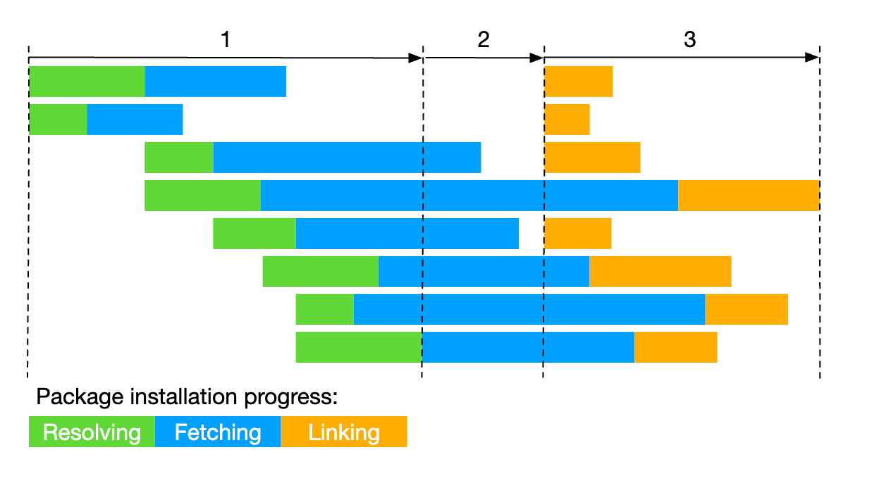
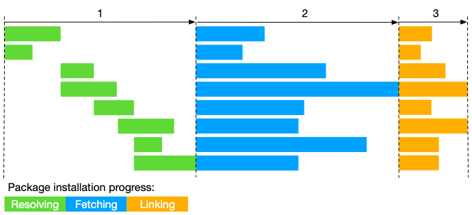

pnpm Basics#
The main motivation to use pnpm is to save disk space and faster installations. The default npm installation always copies all node_modules in each project to the disk.
When using npm, if you have 100 projects using a dependency, you will have 100 copies of that dependency saved on disk. With pnpm, the dependency will be stored in a content-addressable store, so:
If you depend on different versions of the dependency, only the files that differ are added to the store. For instance, if it has 100 files, and a new version has a change in only one of those files,
pnpm updatewill only add 1 new file to the store, instead of cloning the entire dependency just for the singular change.All the files are saved in a single place on the disk. When packages are installed, their files are hard-linked from that single place, consuming no additional disk space. This allows you to share dependencies of the same version across projects.
pnpm installs a package in 3 steps:
Dependency resolution: all required dependencies are identified and fetched to the store.
Directory structure calculation: the
node_modulesdirectory structure is calculated based on the dependencies.Linking dependencies: all remaining dependencies are fetched and hard linked from the store to
node_modules
pnpm installation process

npm installation process

Creating a non-flat node_modules directory#
When installing packages with npm or yarn , all packages are [[hoisted]] to the root of the modules directory. As a result, source code has access to dependencies that are not added as project dependencies.
By default, pnpm uses symlinks to add only the direct dependencies of the project into the root of the modules directory.
pnpm CLI#
pnpm validates all options given on the command line and fails when an option is invalid or doest not exist. npm does not do this.
pnpm add#
pnpm add <pkg> installs a package and any packages that it depends on. By default, any new package is installed as a production dependency. See [[different dependency types]].
Command |
Meaning |
|---|---|
|
Save to |
|
Save to |
|
Save to |
|
Install package globally |
|
Install from the |
|
Specify version |
pnpm install#
pnpm i or pnpm install installs all dependencies. It fails if a lockfile is present but needs an update.
pnpm update#
Command |
Meaning |
|---|---|
|
Updates all dependencies, adhering to ranges specified in |
|
Updates all dependencies to their latest versions |
|
Updates |
|
Updates all dependencies under the |
pnpm remove#
pnpm rm or pnpm uninstall or pnpm un removes packages from node_modules and from the package.json
pnpm dedupe#
Perform an install removing older dependencies in the lockfile if a newer version can be used.
pnpm list#
pnpm ls will output all the versions of the packages that are installed, as well as their dependencies in a tree structure.
pnpm dlx#
pnpx an alias for pnpm dlx fetches a package from the registry without installing it as a dependency, hotloads it, and runs whatever default command binary it exposes.
pnpm init#
Create a package.json file.
You should always git commit the pnpm-lock.yaml file. This helps in faster installations due to skipping the dependency resolution step. Also, it enforces consistent installations and resolution between development, testing, and production environments. pnpm can automatically resolve merge conflicts in the lock file. Simply do pnpm install and commit the changes.